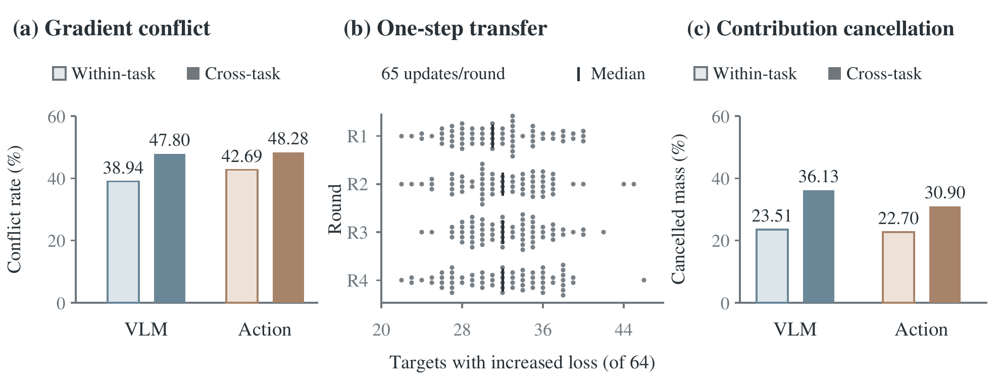
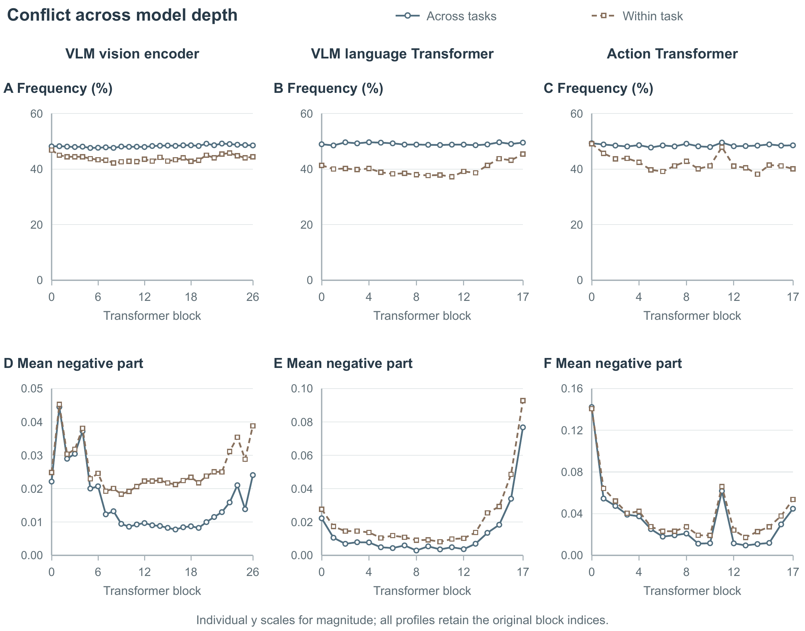
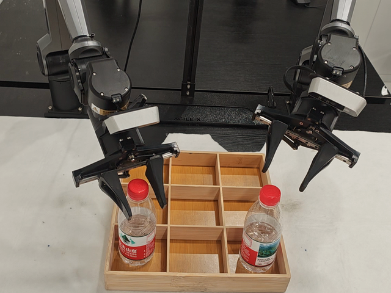
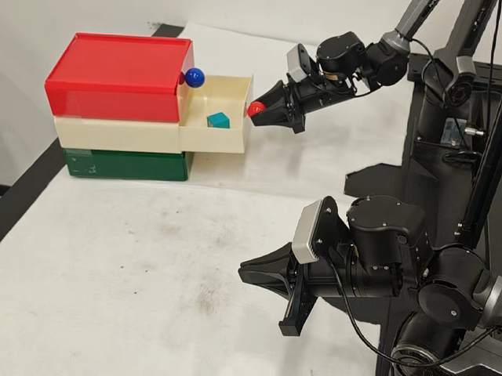

Context beyond task identity +8.95%
Mean success reaches 97.20% with current context, versus 88.25% for Task-ID and 87.50% for a constant condition.
 MorphAct: Contextual Parameterizationof Vision–Language–Action Models
MorphAct: Contextual Parameterizationof Vision–Language–Action ModelsA general framework for contextual adaptation across VLA architectures.
Reaching, contact, transport, precise placement: a single task keeps changing its demands on perception and control.
MorphAct maps the current observation, instruction, and robot state to context-dependent low-rank parameter updates. The same shared generators specialize the policy as the scene changes, without operation labels or separate expert policies.
xt = (ot, ℓ, st) is the current context; Δθ(xt) is its generated update; Ŷt is the predicted action chunk.

Two generators follow the policy’s computation. The first adapts the vision–language representation. The second reads those adapted features and robot state to generate the action module’s update.
Base weights stay frozen. Generated factors are refreshed at each replanning observation and reused for the entire action chunk.

The adapted VLM produces both the features ht used by the action generator and the native action condition Ct. The generators share their learned rule across contexts, while their outputs change with the observation.
For block j, A: din × r and B: r × dout. The base weights stay frozen; the low-rank factors change with the context.
The native action loss trains the upstream generator through both the adapted action condition and the generated action parameters.
Action conditioning
Action-side parameter generation
Here rt = (ht, Ct), ℓt is the per-sample native loss, and Jy,z = ∂y/∂z. Both routes remain differentiable. Generated updates are reused throughout the action chunk and refreshed when replanning.
The row-vector projection uses a factored residual, without materializing a dense update. Factor layouts follow each backbone’s projection geometry.
Φ includes both generators, the state projection, and projectors retained as trainable by the adaptation configuration. ξ is the randomness used by the native objective.
For π0 and π0.5, training samples a time τ and predicts the velocity on the action–noise path:
The action generator uses final adapted multimodal tokens and robot state. Layer-wise prefix key–value states provide native action conditioning. Noisy actions and solver time remain in the native action path.
MorphAct brings contextual specialization to VLA policies, improving overall task success across different architectures and benchmarks.
40 tasks · 4 suites · 2,000 rollouts per evaluation
BaselineBaseline + MorphAct
The largest gains are on Long. +9.00% for X-VLA, +7.20% for π0, and +5.13% for π0.5.
Scroll to see every column
| Backbone | Method | Spatial | Object | Goal | Long | Mean | Var. (pp²) |
|---|---|---|---|---|---|---|---|
| X-VLA | Baseline | 95.40 | 96.60 | 96.00 | 84.20 | 93.05 | — |
| MorphAct | 98.67 | 99.87 | 97.07 | 93.20 | 97.20 | 0.0300 | |
| π0 | Baseline | 96.80 | 98.80 | 95.80 | 85.20 | 94.15 | — |
| MorphAct | 98.00 | 99.60 | 96.60 | 92.40 | 96.65 | 0.0517 | |
| π0.5 | Baseline | 98.80 | 98.20 | 98.00 | 92.40 | 96.85 | — |
| MorphAct | 98.33 | 99.67 | 98.87 | 97.53 | 98.60 | 0.0525 |
Each suite contains 10 tasks, evaluated with 50 rollouts per task and execution horizon H10. Mean averages the four suites. MorphAct scores average three selected evaluations. Var. is the sample variance of their overall scores (pp²); baseline variance is unreported. Bold marks the best score within each backbone, including ties.
50 tasks · 4 difficulty groups · 1,000 rollouts per evaluation
BaselineBaseline + MorphAct
Gains extend to harder tasks. π0 improves Very Hard from 20.00% to 58.00%. π0.5 improves Hard from 38.30% to 66.39%.
Scroll to see every column
| Backbone | Method | Easy | Medium | Hard | Very Hard | Avg. | Var. (pp²) |
|---|---|---|---|---|---|---|---|
| X-VLA | Baseline | 72.50 | 46.36 | 48.30 | 55.00 | 55.54 | — |
| MorphAct | 83.99 | 58.18 | 55.28 | 55.00 | 63.11 | 1.8400 | |
| π0 | Baseline | 77.90 | 51.80 | 53.30 | 20.00 | 50.75 | — |
| MorphAct | 82.44 | 71.36 | 56.39 | 58.00 | 67.05 | 0.6342 | |
| π0.5 | Baseline | 70.50 | 45.00 | 38.30 | 41.00 | 48.70 | — |
| MorphAct | 85.77 | 59.85 | 66.39 | 45.67 | 64.42 | 0.3970 |
Twenty rollouts per task. Avg. gives equal weight to Easy (28 tasks), Medium (11), Hard (6), and Very Hard (5). MorphAct scores average three selected evaluations. Var. is the sample variance of their overall scores (pp²); baseline variance is unreported. Bold marks the best score within each backbone, including ties.
Success rate (%) ↑ · LIBERO shows the 84–100% range; Meta-World shows 15–90%. Dark badges identify the largest absolute gain for each evaluated model.
Six X-VLA variants on LIBERO isolate three choices: the generation condition, the modules receiving updates, and the features connecting the generators.
MorphActAblated variant
Success rate (%) · Both panels show the 30–100% range.
Mean success reaches 97.20% with current context, versus 88.25% for Task-ID and 87.50% for a constant condition.
Action-only reaches 81.00%; VLM-only, 43.50%. Adding upstream adaptation raises Action-only to 86.00%, even before coupling.
Using adapted features to generate action updates raises mean success from 86.00% to 97.20%. On Long, the gain is +21.60%.
Scroll to see every column ↔
| Variant / controlled change | Spatial | Object | Goal | Long | Mean |
|---|---|---|---|---|---|
| MorphActCurrent context; both modules; adapted features | 98.67 | 99.87 | 97.07 | 93.20 | 97.20 |
| ConstantOne fixed generation condition across all tasks | 93.40 | 90.00 | 89.00 | 77.60 | 87.50 |
| Task-IDOne fixed generation condition per task | 90.00 | 90.80 | 91.20 | 81.00 | 88.25 |
| VLM-onlyGenerated updates in the VLM only | 40.00 | 59.00 | 42.00 | 33.00 | 43.50 |
| Action-onlyGenerated updates in the action module only | 88.80 | 92.00 | 73.80 | 69.40 | 81.00 |
| UnadaptedPre-adaptation features condition the action generator | 91.00 | 97.80 | 83.60 | 71.60 | 86.00 |
Constant and Task-ID change only the generation condition, retaining normal policy inputs. VLM-only and Action-only disable generated updates in the other module. Unadapted keeps both generators and adapted action prediction; only its action generator receives pre-adaptation features. Mean averages the four suites.
Shared adaptation can produce competing descent directions across manipulation contexts. The paper examines this interaction through gradient alignment and one-step transfer, measured at a fixed checkpoint.
For module m, negative cosine indicates competing local descent directions across task batches.
A positive transfer score reduces the target loss; a negative score increases it. Every source update starts from the same checkpoint.

All 260 source-improving updates increase loss on other sampled tasks. Cross-task gradient conflict and cancellation are higher in both the VLM and action module. These measurements examine local losses at one fixed checkpoint.

The action groups outside Transformer blocks, block 00, and block 11 account for 78.88% of pooled negative contribution before rounding. Together, these groups contribute most of the measured negative mass on the action side.

MorphAct improves π0.5 on all four physical tasks by 8–14%. Each method is evaluated over 50 physical rollouts per task.
Explore the paper’s task scenes and play paired demonstrations. The clips show separate trials at the same playback speed within each task.

01 +10%
Arrange letter blocks through coordinated grasps and changes in orientation.

02 +14%
Select hardware and sort it into the target containers.

03 +8%
Grasp, lift, and transfer water bottles between locations.

04 +12%
Engage the handle and place an object inside the cabinet.
Photos reproduce the paper’s representative rollout frames. Success rates summarize all 50 rollouts per method and task.